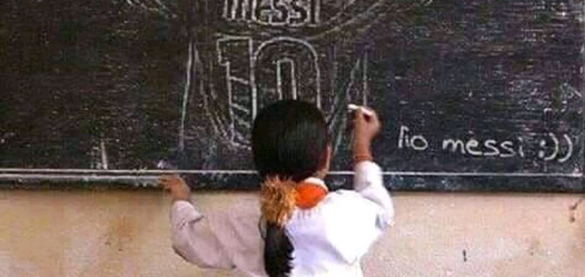

Posted at Date: April 01, 2019
Credit : রাইট স্পোর্টস ওয়েব ডেস্ক
সব ভয়ঙ্কর-বীভৎস-ভীষণ-এর বিরোধিতায় এবার
পানেনকা ফ্রিকিক মেসির

সপানেনকা পেনাল্টি, ফুটবলপ্রেমীরা জানেন। ফ্রিকিক-এ পানেনকা? দেখালেন লিওনেল মেসি! কাতালান-ডার্বিতে, এসপানিওলের বিরুদ্ধে। ঘরের মাঠ কাম্প নু-তে। ম্যাচ তখন ৭১ মিনিটে। বক্সের ঠিক বাইরে ফাউল করা হয়েছিল তাঁকে। ০-০ ম্যাচ তখন। ১৮ গজের ঠিক বাইরে থেকে ফ্রিকিকে জোর আনা সম্ভব হলেও দিশায় নিখুঁত থাকা কঠিন। সুতরাং, মেসির মাথা ভেবে নিল, পা করে দেখাল!
আলতো চিপ করে দিলেন, মানব-দেওয়াল টপকে। ফাউল করেছিলেন যিনি, এসপানিওল অধিনায়ক, দেওয়ালে দাঁড়িয়েও পিছিয়ে গিয়েছিলেন। তাঁর গোলরক্ষক যেহেতু দূরের পোস্টে দাঁড়িয়েছেন, পিছিয়ে গিয়ে তিনি প্রথম পোস্টে বল এলে হেড করে বের করে দেবেন, আশায়। বার্সেলোনা-অধিনায়কের আলতো চিপ তাঁর মাথায়ই পড়ল। কিন্তু, তিনি ততক্ষণে ঘাবড়ে গিয়েছেন। কী করে অত আস্তে একটা বল আসতে পারে! কিছু বোঝার আগে ডিফেন্ডারের অবচেতন মাথা ঘুরিয়ে ফেলল। বল সেই মাথায় লেগে জালে। গোলরক্ষক দ্বিতীয় পোস্ট থেকে হাত বাড়িয়ে ছুটে আসছিলেন। কিছু করার ছিল না তাঁরও। সবাই বিহ্বল! এমনও হয়! করে দেখানো যায়! এত সহজে, এত কঠিন কাজ!
লিওনেল মেসি মানে এখন তা-ই। যা করেছেন এবং যা করে চলেছেন প্রতিদিন, খুলছে ইতিহাসের নতুন পাতা। রেয়াল বেতিসের বিরুদ্ধে আগের ম্যাচে বক্সের মাথা থেকে এভাবেই ‘পানেনকা’ গোল করেছিলেন, খেলা চলাকালীন। তখন বেশি কথা ওঠেনি যদিও, সেট পিস ছিল না বলেই। বেতিসের ফুটবলাররা তো বটেই, গোটা মাঠ উঠে দাঁড়িয়ে অভিনন্দিত করেছিল। জীবনের ৫১তম হ্যাটট্রিকের জন্য নয়। যেভাবে ফুটবল খেলছেন তিনি, সে জন্য। কেমন এ ফুটবল?
দেখুন, মুগ্ধতা বাড়বে। গত প্রায় বছর পনের হতে চলল, নিজেকে গড়ছেন নিরন্তর। আরও সুন্দর হয়ে উঠছেন। অনেকে নেতিবাচক ‘ভয়ঙ্কর’ জুড়ে ফেলেন চূড়ান্ত ইতিবাচক ‘সুন্দর’-এর সঙ্গে। সুনীল গঙ্গোপাধ্যায় কী ভেবে লিখেছিলেন, কেন অমন ব্যবহার করেছিলেন, সবার পক্ষে বোঝা সম্ভব কি? কিন্তু, বাংলায় এখন খুবই প্রচলিত এই ব্যবহার। ‘বীভৎস সুন্দর’-ও শোনা যাচ্ছে শিক্ষিত-রাস্তায় আর ‘আরজে’ অর্থাৎ রেডিও জকি-র এফএম বাংলায়। বীভৎস রকমের বেখাপ্পা! মেসির ফুটবল এই সব ভয়ঙ্কর-বীভৎস-ভীষণ-এর বিরোধিতা করে, নিঃশব্দে। হুঙ্কার-আস্ফালন নেই। ক্লাবের লোগোয় ছোট্ট চুমু। সেই ক্লাব যা তাঁকে জীবন দিয়েছিল ফিরিয়ে। বিরাট খরচের চিকিৎসা, না করালে সহজভাবে বেঁচে থাকা যেত না। প্রতিদান দিয়ে চলেছেন আজও।
মরসুমে ৩৮ ম্যাচে ৪১ গোল, ১৮ অ্যাসিস্ট। মোট ৫৯ গোলের পেছনে তাঁর পা, শনিবারের জোড়া গোলের পর। লা লিগায় ৩৩৪তম ম্যাচ জিতে ছুঁয়ে ফেললেন ইকের কাসিয়াসকে, পেরিয়ে যাবেন অচিরেই। টানা এগার মরসুম ৪০-এর বেশি গোল করে ফেললেন। ৮০৪ ম্যাচ, ৬৫৮ গোল, ২৭০ অ্যাসিস্ট! মানে, ৮০৪ ম্যাচে ৯২৮ গোলে সরাসরি অবদান! অন্য কারও হলে অবিশ্বাস্য মনে হতেও পারত। মেসির জন্য তা-ও নয়। জেরোম বোয়াতেংকে কাটা কলাগাছের মতো শূন্য-জাড্য ফেলে ম্যানুয়েল নয়ারকে মাঠে (এবং পথে!) বসিয়ে মাথার ওপর দিয়ে ডানপায়ে তুলে দিয়েছিলেন বল, ছেলেখেলা যেন! বায়ার্ন মিউনিখ ভোলেনি, ফুটবলও। জোহান ক্রুয়েফের মতো পেনাল্টি-পাস থেকে সুয়ারেজকে দিয়ে গোল করিয়েছেন। এবার পানেনকা ফ্রিকিক। বিশ্ব বিস্মিত করে যেমন, মেসিও। তাই কবীর সুমনের গানের কলি ধার করে বলতে হয়, ‘প্রতিদিন সূর্য ওঠে তোমায় দেখবে বলে’, মেসি!
Top Stories

Calcutta Sports Journalists' Club requests the pleasure of your company at its annual awards functionMore...

Jasprit Bumrah has been declared fit and he will now be available for selection for India's third Test against England at Trent Bridge. More...

Ronaldo has increased Juventus' standing among Europe's elite. More...